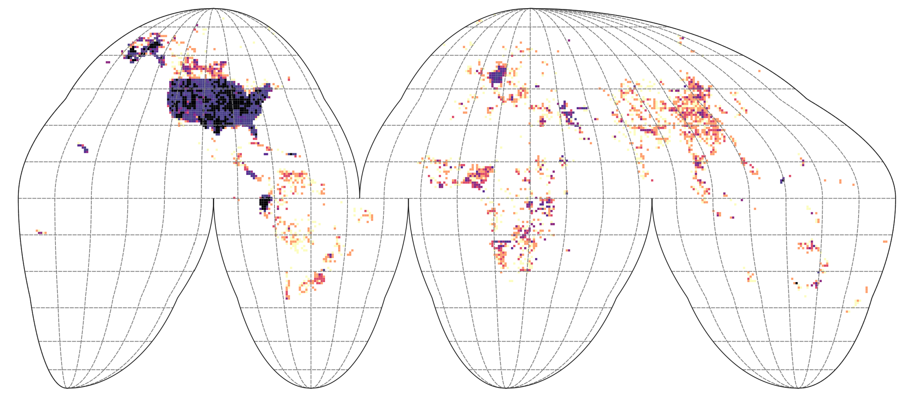

add_s = function(x){
y = c("*and$", "*bel$", "*tel$", "*hel$", "*uod$", "*yod$", "*hod$", "*mod$", "*ent$", "*ert$", "*ept$", "*ult$", "*cid$", "*bid$", "*lid$", "*gid$", "*hid$", "*rid$", "*sid$", "*alf$", "*oll$", "*ist$")
s = sapply(y, function(i){grep(i, x)})
if(sum(unlist(s))>0){
x = paste0(x, "s")
}
x
}
match_tax = function(i, x){
x <- x[agrep(i, x$SSL_classification_name, ignore.case=TRUE, max.distance=0.02),]
if(nrow(x)>0){
x$taxsubgrp <- i
return(x)
}
}USDA Soil Taxonomy training points
USDA soil taxonomy
USDA Soil Taxonomy is among the most described soil classification system in the world with many documents available in open domain and maintained (curtesy of USDA and USGS). The current edition of the Soil Taxonomy is 13 and has 6 levels: Order, Suborder, Great Group, Subgroup, Family, and Series. In this notebook we explain how to produce consistent global analysis-ready point data set with soil taxonomy subgroup labels. Note: this code is continuously being updated. If you have more data you would like to share and add to this list, please contact us.
First we will define two functions to help us clean-up and bind soil type labels. The first function is used to add “s” at the end of the soil label (often ommitted), the second function is used to do a fuzzy search to find is some label appears in complex text:
This is an example of addition of “s” at the end of soil type:
sapply(c("typic argiustoll", "typic argiustolls", "typic haploperox", "aquollic hapludalf", "aquollic hapludalfs"), add_s) typic argiustoll typic argiustolls typic haploperox
"typic argiustolls" "typic argiustolls" "typic haploperox"
aquollic hapludalf aquollic hapludalfs
"aquollic hapludalfs" "aquollic hapludalfs" This is an example of fuzzy search of some target term:
x = data.frame(SSL_classification_name=c("pachic argiustolls", "typic argiustoll",
"argiustolls", "Typic Argiustolls", "typic Argiustols"), row.no=1:5)
match_tax(i="typic argiustolls", x) SSL_classification_name row.no taxsubgrp
2 typic argiustoll 2 typic argiustolls
4 Typic Argiustolls 4 typic argiustolls
5 typic Argiustols 5 typic argiustollsAs demonstrated, this will take care of typos and any capital letter issues.
Note that many soil data bases do not have standardized way the soil types are entered and hence some clean-up and sorting is often required. In the case of the National Cooperative Soil Survey Characterization Database, soil types are entered via several columns, which can also be split if needed:
$ SSL_name : chr NA NA "Cathay" NA ...
$ SSL_class_type : chr NA NA "series" NA ...
$ SSL_classdate : chr NA NA "1991/10/03 00:00:00+00" NA ...
$ SSL_classification_name : chr NA NA "Fine-loamy, mixed, frigid Udic Argiboroll" NA ...
$ SSL_taxorder : chr NA NA "mollisols" NA ...
$ SSL_taxsuborder : chr NA NA "borolls" NA ...
$ SSL_taxgrtgroup : chr NA NA "argiborolls" NA ...
$ SSL_taxsubgrp : chr NA NA "udic argiborolls" NA ...
$ SSL_taxpartsize : chr NA NA "fine-loamy" NA ...
$ SSL_taxpartsizemod : chr NA NA NA NA ...
$ SSL_taxceactcl : chr NA NA NA NA ...
$ SSL_taxreaction : chr NA NA NA NA ...
$ SSL_taxtempcl : chr NA NA "frigid" NA ...
$ SSL_taxmoistscl : chr NA NA NA NA ...
$ SSL_taxtempregime : chr NA NA "frigid" NA ...
$ SSL_taxminalogy : chr NA NA "mixed" NA ...
$ SSL_taxother : chr NA NA NA NA ...
$ SSL_osdtypelocflag : int NA NA NA NA NA NA NA NA NA NA ...The table TAXOUSDA_GreatGroups.csv contains all combinations of USDA great-groups
sel.tax.vars = c("site_key", "olc_id", "year", "source_db", "longitude_decimal_degrees", "latitude_decimal_degrees", "taxsubgrp")
usda_tax = read.csv("./correlation/TAXOUSDA_GreatGroups.csv")
head(usda_tax) Great_Group Suborder Order TAX Organic_soils
1 Albaqualfs Aqualfs Alfisols Alfisols_Aqualfs_Albaqualfs 0
2 Cryaqualfs Aqualfs Alfisols Alfisols_Aqualfs_Cryaqualfs 0
3 Duraqualfs Aqualfs Alfisols Alfisols_Aqualfs_Duraqualfs 0
4 Endoaqualfs Aqualfs Alfisols Alfisols_Aqualfs_Endoaqualfs 0
5 Epiaqualfs Aqualfs Alfisols Alfisols_Aqualfs_Epiaqualfs 0
6 Fragiaqualfs Aqualfs Alfisols Alfisols_Aqualfs_Fragiaqualfs 0Preparation of the standard finit legend
In this section we show how to prepare a fixed legend for the purpose of spatial analysis, and which we think represent all world soils. We focus on the “subgroup” e.g. “aeric fluvaquents” (order: Entisols, suborder: Aquents, great group: Fluvaquents), which is an Entisols on floodplains with aquic moisture regimes that are not so wet. They are better aerated in the “upper” part of the soil profile.
To create a representative legend, we will use the highest quality data with soil types quality controlled and described in metadata:
- National Soil Information System (NASIS) profiles and semi-profiles,
- National Cooperative Soil Survey Characterization Database,
- WoSIS soil profiles and samples,
We import the 3 data sets in R:
if(!exists("tax_nasis")){
## USDA legacy points ----
tax_nasis = readRDS.gz("/mnt/diskstation/data/Soil_points/USA/NASIS_PNTS/nasis_tax_sites.rds")
tax_nasis = plyr::rename(tax_nasis, c("x_std"="longitude_decimal_degrees", "y_std"="latitude_decimal_degrees", "obsdate"="site_obsdate"))
tax_nasis$source_db = "USDA_NASIS"
tax_nasis$site_key = paste0("NASIS.", tax_nasis$peiid)
tax_nasis$olc_id = olctools::encode_olc(tax_nasis$latitude_decimal_degrees, tax_nasis$longitude_decimal_degrees, 11)
#summary(as.factor(tax_nasis$taxsubgrp))
tax_nasis$year = as.numeric(substr(tax_nasis$site_obsdate, 1, 4))
tax_nasis = tax_nasis[,sel.tax.vars]
tax_nasis = tax_nasis[!is.na(tax_nasis$taxsubgrp) & !is.na(tax_nasis$longitude_decimal_degrees),]
}
str(tax_nasis)'data.frame': 314560 obs. of 7 variables:
$ site_key : chr "NASIS.115624" "NASIS.115623" "NASIS.9914" "NASIS.9948" ...
$ olc_id : chr "85V4PQC2+G3V" "85V4QW49+6PQ" "84PRGC6X+2JP" "84PRCCV7+MXV" ...
$ year : num 2000 2000 2000 2000 2000 2000 2000 2000 2000 2000 ...
$ source_db : chr "USDA_NASIS" "USDA_NASIS" "USDA_NASIS" "USDA_NASIS" ...
$ longitude_decimal_degrees: num -117 -117 -124 -124 -117 ...
$ latitude_decimal_degrees : num 47.7 47.8 44.5 44.4 47.2 ...
$ taxsubgrp : chr "xeric argialbolls" "aquandic humaquepts" "pachic fulvicryands" "lithic hapludands" ...if(!exists("ncss.site")){
ncss.site <- read.table("/mnt/diskstation/data/Soil_points/INT/USDA_NCSS/ncss_labdata_locations.csv.gz", fill = TRUE, header = TRUE, sep=",")
#str(ncss.site)
ncss.site = plyr::rename(ncss.site, c("corr_taxsubgrp"="taxsubgrp"))
ncss.site$source_db = "USDA_NCSS"
ncss.site$year = as.numeric(substr(ncss.site$site_obsdate, 1, 4))
ncss.site$olc_id = olctools::encode_olc(ncss.site$latitude_decimal_degrees, ncss.site$longitude_decimal_degrees, 11)
ncss.site = ncss.site[,sel.tax.vars]
ncss.site = ncss.site[!is.na(ncss.site$taxsubgrp) & !is.na(ncss.site$longitude_decimal_degrees),]
#summary(as.factor(ncss.site$taxsubgrp))
}
dim(ncss.site)[1] 33235 7if(!exists("tax_wosis")){
tax_wosis = readr::read_tsv(gzfile('/mnt/diskstation/data/Soil_points/INT/WoSIS/WoSIS_2023_December/wosis_202312_profiles.tsv.gz'), col_types='icciccddcccccciccccicccci')
tax_wosis = plyr::rename(tax_wosis, c("longitude"="longitude_decimal_degrees", "latitude"="latitude_decimal_degrees", "dataset_code"="source_db"))
tax_wosis = tax_wosis[!is.na(tax_wosis$usda_great_group),]
tax_wosis$taxsubgrp = tolower(paste(tax_wosis$usda_subgroup, tax_wosis$usda_great_group))
tax_wosis$site_key = paste0("WOSIS.", tax_wosis$site_id)
tax_wosis$year = as.numeric(substr(tax_wosis$usda_publication_year, 1, 4))
tax_wosis$olc_id = olctools::encode_olc(tax_wosis$latitude_decimal_degrees, tax_wosis$longitude_decimal_degrees, 11)
tax_wosis = tax_wosis[,sel.tax.vars]
tax_wosis = tax_wosis[!is.na(tax_wosis$taxsubgrp) & !is.na(tax_wosis$longitude_decimal_degrees),]
#summary(as.factor(tax_wosis$taxsubgrp))
}
dim(tax_wosis)[1] 30998 7Next, we can bind the 3 data sets to produce 1 consistent legend with finite number of classes and names strictly standardized. We also add “s” to fix typos etc.
if(!exists("tax_all")){
tax_all = do.call(rbind, list(tax_nasis, tax_wosis, ncss.site))
#str(tax_all)
## 378793 obs. of 7 variables
## add missing "s"
#tax_all$taxsubgrp = sapply(tax_all$taxsubgrp, add_s)
tax_all$taxsubgrp = unlist(parallel::mclapply(tax_all$taxsubgrp, add_s, mc.cores = 32))
}
#summary(as.factor(tax_all$taxsubgrp[grep("boralf", tax_all$taxsubgrp)]))
summary(as.factor(tax_all$taxsubgrp)) typic hapludalfs typic hapludults
8481 6832
typic argiustolls pachic argiustolls
6467 4611
typic argiudolls mollic hapludalfs
4561 4516
aridic argiustolls typic paleudults
4131 4124
typic endoaquolls aquic hapludalfs
3855 3780
typic dystrudepts aridic haplustalfs
3689 3682
typic haplustolls aridic calciustepts
3590 3479
oxyaquic hapludalfs ustic haplocalcids
3389 2979
typic haplustalfs ultic hapludalfs
2832 2738
typic paleudalfs typic argiaquolls
2685 2578
typic haplustepts aridic haplustepts
2560 2521
typic udipsamments typic hapludolls
2369 2309
aridic calciustolls ustic haplocambids
2258 2256
typic torriorthents lithic haplustolls
2162 2122
aeric epiaqualfs ustic calciargids
2109 1991
typic torripsamments cumulic hapludolls
1960 1934
cumulic haplustolls ustic haplargids
1918 1836
udic argiustolls aridic paleustolls
1815 1810
aquic argiudolls ustic torriorthents
1798 1738
aridic haplustolls lithic ustic torriorthents
1736 1697
typic haplocalcids pachic haplustolls
1662 1623
aquic hapludults andic haplocryods
1563 1547
ultic haploxeralfs calcidic argiustolls
1543 1541
oxyaquic argiudolls typic udorthents
1539 1538
typic fragiudults aridic paleustalfs
1506 1446
cumulic endoaquolls typic dystrocryepts
1414 1394
typic haplocryepts typic eutrocryepts
1375 1358
ustic torripsamments aridic ustorthents
1348 1342
aquertic argiudolls udic haplusterts
1323 1312
typic cryorthents fluvaquentic endoaquepts
1305 1298
ustic argicryolls typic argixerolls
1290 1285
typic kanhapludults terric haplosaprists
1222 1211
typic calciustolls lithic argixerolls
1207 1204
typic udifluvents typic ustorthents
1204 1195
typic haplorthods dystric eutrudepts
1194 1186
oxyaquic fragiudalfs typic eutrudepts
1184 1173
fluvaquentic endoaquolls typic histoturbels
1163 1162
aquic hapludolls pachic argicryolls
1139 1133
calcidic haplustalfs petrocalcic calciustolls
1102 1083
typic haplocambids typic haplargids
1081 1052
calcic petrocalcids typic endoaqualfs
1027 1017
lithic hapludolls xeric haplargids
1009 965
lithic torriorthents typic glossaqualfs
957 957
oxyaquic glossudalfs typic ustipsamments
949 928
aeric calciaquolls udic haplustalfs
923 904
typic haplocryods typic quartzipsamments
901 893
typic haplosaprists lithic ustorthents
891 882
vitrandic argixerolls xeric haplocalcids
879 839
pachic argixerolls typic torrifluvents
836 825
oxyaquic vertic argiudolls (Other)
824 185042 This shows which are the world’s most frequent subgroup classes. Next we can complete the final legend. For practical purposes, we limit to classes that have at least 30 observations, which gives a total of 818 classes.
#write.csv(ext.l, "tax_extensions_summary.csv")
tax.sm = summary(as.factor(tax_all$taxsubgrp), maxsum = 820)
tax.s = as.data.frame(tax.sm)
levels = attr(tax.sm, "names")[1:818]
#write.csv(tax.s, "tax_taxsubgrp_summary.csv")It is important for further spatial analysis that the number of classes is finite and that there are enough points for Machine Learning for example.
Fuzzy search
Next, we would also like to add points from national and regional soil profiles that are not listed above and that could help increase representation of points geographically. For this we use the previously compiled soil data described in the previous sections:
if(!exists("tax_spropsA")){
tax_sprops0 = as.data.frame( rbind(data.table(readRDS.gz("/mnt/diskstation/data/Soil_points/sol_chem.pnts_horizons.rds")),
data.table(readRDS.gz("/mnt/diskstation/data/Soil_points/sol_chem.pnts_horizons_TMP.rds")), fill=TRUE, ignore.attr=TRUE))
tax_sprops0 = tax_sprops0[!tax_sprops0$source_db=="USDA_NCSS" & !(tax_sprops0$SSL_classification_name %in% c("", "NA / NA", "#N/A / #N/A", " / ")),]
tax_sprops0$year = substr(tax_sprops0$site_obsdate, 1, 4)
tax_sprops0 = tax_sprops0[!duplicated(tax_sprops0$olc_id),]
tax_sprops0$SSL_classification_name = tolower(tax_sprops0$SSL_classification_name)
tax_sprops0 = tax_sprops0[!is.na(tax_sprops0$SSL_classification_name),]
#dim(tax_sprops0)
## 35437 45
#summary(as.factor(tax_sprops0$source_db))
#str(tax_sprops0$SSL_classification_name)
tax_c1 = sapply(tax_sprops0$SSL_classification_name, function(i){strsplit(i, " / ")[[1]][1]})
tax_c2 = sapply(tax_sprops0$SSL_classification_name, function(i){strsplit(i, " / ")[[1]][2]})
sel.tax.vars0 = c("site_key", "olc_id", "year", "source_db", "longitude_decimal_degrees", "latitude_decimal_degrees")
tax_spropsA = rbind(cbind(tax_sprops0[,sel.tax.vars0], data.frame(SSL_classification_name=tax_c1)),
cbind(tax_sprops0[,sel.tax.vars0], data.frame(SSL_classification_name=tax_c2)))
}
str(tax_spropsA)'data.frame': 70874 obs. of 7 variables:
$ site_key : chr "15" "17" "18" "19" ...
$ olc_id : chr "9F6FRM8J+J62" "9F6CPWCV+9M9" "9F6FP2XH+P9C" "9F6FQ52P+RHW" ...
$ year : chr "2016" "2016" "2015" "2016" ...
$ source_db : chr "BZE_LW" "BZE_LW" "BZE_LW" "BZE_LW" ...
$ longitude_decimal_degrees: num 9.68 8.94 9.03 9.19 9.78 ...
$ latitude_decimal_degrees : num 54.8 54.7 54.7 54.8 54.7 ...
$ SSL_classification_name : chr "typic argiudoll" "aeric tropaquept" "humaquept" "humaquept" ...This gives us additional 71k points with soil classification name. These points need to be cleaned up to match exactly the previously produced legend. Because fuzzy matching can be computational as the algorithm looks for N classes in M rows, we run this matching in parallel:
library(parallel)
tax_spropsA.lst = parallel::mclapply(levels, function(i){match_tax(i, tax_spropsA)}, mc.cores=30)
tax_spropsV = do.call(rbind, tax_spropsA.lst)
## Add missing "S" on the end:
## "paleustollic chromustert" -> "paleustollic chromusterts"
tax_spropsV$taxsubgrp = unlist(parallel::mclapply(tax_spropsV$taxsubgrp, add_s, mc.cores = 32))
str(tax_spropsV)'data.frame': 24869 obs. of 8 variables:
$ site_key : chr "67" "75" "91" "114" ...
$ olc_id : chr "9F6GC5XP+856" "9F6M9JCF+J75" "9F6J9Q4H+GM2" "9F6G7RV2+PW5" ...
$ year : chr "2016" "2014" "2014" "2016" ...
$ source_db : chr "BZE_LW" "BZE_LW" "BZE_LW" "BZE_LW" ...
$ longitude_decimal_degrees: num 10.2 13.6 12.8 10.8 10.1 ...
$ latitude_decimal_degrees : num 54.4 54.4 54.4 54.3 54.2 ...
$ SSL_classification_name : chr "typic hapludalfs" "typic hapludalfs" "typic hapludalfs" "typic hapludalfs" ...
$ taxsubgrp : chr "typic hapludalfs" "typic hapludalfs" "typic hapludalfs" "typic hapludalfs" ...this shows that only 25k have an actually matching soil type that we can use.
Final bind
We can finally bind and export the final Analysis-Ready table with training points matching our target legend:
tax_allT = do.call(rbind, list(tax_all, tax_spropsV[,sel.tax.vars]))
str(tax_allT)'data.frame': 403662 obs. of 7 variables:
$ site_key : chr "NASIS.115624" "NASIS.115623" "NASIS.9914" "NASIS.9948" ...
$ olc_id : chr "85V4PQC2+G3V" "85V4QW49+6PQ" "84PRGC6X+2JP" "84PRCCV7+MXV" ...
$ year : chr "2000" "2000" "2000" "2000" ...
$ source_db : chr "USDA_NASIS" "USDA_NASIS" "USDA_NASIS" "USDA_NASIS" ...
$ longitude_decimal_degrees: num -117 -117 -124 -124 -117 ...
$ latitude_decimal_degrees : num 47.7 47.8 44.5 44.4 47.2 ...
$ taxsubgrp : chr "xeric argialbolls" "aquandic humaquepts" "pachic fulvicryands" "lithic hapludands" ...## 403662 obs. of 7 variables
## we do need duplicates as some translations lead to 2-3 classes
#tax_allT = tax_allT[!duplicated(tax_allT$olc_id),]
## remove all points with exactly the same TAX and olc_id
dup = duplicated(gsub(" ", "_", paste(tax_allT$olc_id, tax_allT$taxsubgrp, sep=" ")))
summary(dup) ## 47662 complete duplicates Mode FALSE TRUE
logical 356000 47662 tax_allT = tax_allT[!dup,]
#summary(as.factor(tax_allT$source_db))
## use only points from the target legend:
tax_allT0 = tax_allT[which(tax_allT$taxsubgrp %in% levels),]
str(tax_allT0)'data.frame': 334761 obs. of 7 variables:
$ site_key : chr "NASIS.275760" "NASIS.9655" "NASIS.9669" "NASIS.9730" ...
$ olc_id : chr "85V565W5+4Q8" "84QRQJP7+9P8" "84QRFHF7+WX6" "84QRMJ24+MPW" ...
$ year : chr "2000" "2000" "2000" "2000" ...
$ source_db : chr "USDA_NASIS" "USDA_NASIS" "USDA_NASIS" "USDA_NASIS" ...
$ longitude_decimal_degrees: num -117 -123 -123 -123 -123 ...
$ latitude_decimal_degrees : num 47.2 45.8 45.5 45.7 44.4 ...
$ taxsubgrp : chr "vitrandic haploxerolls" "dystric eutrudepts" "andic dystrudepts" "humic dystrudepts" ...#write.csv(tax_allT0, gzfile("taxsubgrp_pnts_global_xyt_v20250204.csv.gz"))
#writeVector(vect(tax_allT0, geom=c("longitude_decimal_degrees", "latitude_decimal_degrees"), crs="EPSG:4326"), "taxsubgrp_pnts_global_xyt.gpkg", overwrite=TRUE)Note, we removed some duplicates as many data sets are compilations so some points appear in multiple data sets.
We can plot the density of points in Goode Homolosize Interupted projection so that areas are shown realistically:
g1 = terra::vect("/mnt/diskstation/data/Soil_points/tiles_GH_100km_land.gpkg")
ovt.g1 = terra::extract(g1["ID"], terra::project(terra::vect(tax_allT, geom=c("longitude_decimal_degrees", "latitude_decimal_degrees"), crs="EPSG:4326"), crs(g1)))
g1t.c = summary(as.factor(ovt.g1$ID), maxsum = length(levels(as.factor(ovt.g1$ID))))
g1t.df = data.frame(count=g1t.c, ID=attr(g1t.c, "names"))
g1$count = dplyr::left_join(data.frame(ID=g1$ID), g1t.df)$count
#plot(g1["count"])
#writeVector(g1["count"], "/data/dev/tiles_GH_100km_tax.dens.gpkg", overwrite=TRUE)
Save temp object:
save.image.pigz(file="soilusda.RData")